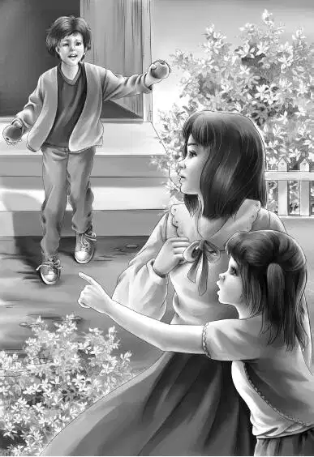

Chapter 7 A Wild Ride
亨利、杰西、维莉和爷爷几个人一起，静静地坐在那节大尾车里，谁都没有说话。列车一直哐啷啷地向前开着。
最后杰西终于开口说道：“我受不了啦！我要去看看班尼是不是在小尾车里，希望您不要介意，爷爷！”
奥登先生说：“我不会介意的，杰西。我觉得你说得对，他迟早都要醒过来，何况吃晚饭的时间已经到了。”
杰西和维莉打开小尾车的门，朝里面看了一眼，四张床铺全是空的。
“他不在这儿！”两人连忙喊道。
“哦，爷爷，我们该怎么办？”维莉问道。
奥登先生连忙说道：“别急！维莉，我们会找到他的，我能肯定！”
亨利说：“现在是使用气闸的时候了——我们必须让火车上的工作人员知道，我们遇上了大麻烦。”
他走到桌前，将拉杆扳到中间位置。火车立刻开始减速，接着慢慢地停了下来。
奥登一家跳下车，看到阿尔正沿着车厢跑过来。
“班尼失踪了！”爷爷叫道。
“失踪了？”阿尔叫道，“发生了什么事？”
“一会儿再告诉你。”奥登先生说，“我敢肯定，他现在还在玻璃厂路口，他去看那匹会说话的马了。”
“我们没法回去，先生！”阿尔皱着眉头说，“我很抱歉，但这是规定，不按照规定办事很容易引发事故。”
爷爷点了点头：“我明白。可是我们怎么才能回到玻璃厂路口呢？我们必须找到他。”
阿尔说：“我认为最好的办法是你们都坐到下一站，然后下车。下一站是伍托克站，你们可以在那里租一辆车。你们找到男孩以后立刻返回，也许能在斯坪德尔追上这列火车。”
“好吧，我们会找到他的！”爷爷说，“就算要把整片森林踏平，我们也要找到他。”
“我们也会尽力而为，”阿尔说，“让火车尽快赶到伍托克。”
阿尔跑回机车室，奥登家的孩子也赶快回到了大尾车里。两声汽笛响过，火车重新上路了。
杰西问道：“爷爷，班尼现在会在哪里？”
“哈，我的孩子，班尼肩膀上的脑袋聪明着呐，他会想出办法来的。他发现错过了火车，肯定会待在原地，等着我们去找他。我能想到的只有这个，否则他还能怎么办？”
“他也许会打电话求助。”维莉说。
“他到哪里找电话去？”奥登先生问道，“车站可能已经关门了，工厂也是。不管怎样，我们都必须先回到玻璃厂，看他在不在那里。”
这时，尾车开始左右摇晃起来。
“火车的速度比平时快了许多。”杰西说，“司机在帮助我们。”
列车在伍托克站停住，奥登一家人已经做好准备。他们跳下车，朝着车头匆匆赶去。他们看到卡尔先生正在跟一个坐在老爷车里的人交谈。
卡尔先生冲他们喊道：“这位先生会把你们送回玻璃厂路口站。我认识他，他是个很有经验的司机。”
“你知道哪条路最近吗？”爷爷一边问，一边和所有人上了车。
“是的，先生。我们从玻璃厂前面过去，再穿过铁路，很快就会看到车站和森林。”
“没错！”
大家都没再讲话。老式轿车一路颠簸，最终经过玻璃厂，从铁路线上横穿过去。
“车站到了！”亨利叫道。车子立刻停住了。
班尼和查理正坐在台阶上吃苹果。班尼听到动静，立刻抬起头来。
“他在这儿！”杰西叫道。
“哦，班尼！”维莉大声说。
班尼也叫了起来：“是爷爷来了，查理！”他跑到车前，两只手里还拿着苹果，“我就知道！我就知道！我就知道，你们会找到我的！”他一遍遍地重复着，“我迷了路！查理对我真是太好了！”
奥登先生虽然很急，但还是抽出时间向查理道谢：“谢谢你，查理！但是我们现在不能多聊，因为我们想在下一站赶上那列火车。”

“恐怕不行，老先生。”查理说，“你们不要在下一站停车，你们应该直接开到凡野站，在那里才能赶上车。”
“谢谢你！”奥登先生叫道。
查理看着轿车转了个弯，消失在视线里后，才开心地走进了树林里。
“那个男孩说得对，”老爷车司机对奥登一家说，“我才不会赶到斯坪德尔去，我要直接开到凡野站去。”
轿车经过斯坪德尔时，小北火车果然已经了无踪影。
司机按照查理说的，继续向前开着，直接朝凡野车站赶去。很快他就换了一条路线，说：“听我的指挥，随时准备下车。”
“没问题。”班尼说。
“现在就下车！”过了没多久，司机一声令下，刹住了车。
奥登一家跑上站台，朝下面的铁轨看去。
“哦，天哪！”杰西说，“火车已经开走了，我们又错过了！”她看到两节尾车刚刚消失在转弯处。
“没办法了！”司机说，“赶紧上车，我们立刻赶到欧克山去！”
“等等！”维莉又叫道，“火车倒回来了！阿尔就站在后面的平台上，他看见我们了！”
“还有列车长！”亨利说，“他们都在挥手！”
没错，小北火车正缓缓地、轰隆隆地朝车站倒了回来。
爷爷把钱付给司机。众人站成一排，等着火车停下。
从没见过哪列火车上的工作人员见到乘客后如此高兴。司机拉响汽笛，列车长深吸一口气，扶着奥登先生登上火车。阿尔看着班尼说：“别再随便下车了，年轻人！”
“嗯，我再也不乱跑了！”班尼保证道。
奥登一家在大尾车里坐了下来。杰西帮班尼清洗了膝盖上的伤口，裹上了绷带。大家互相看了看对方，“我有点冷。”爷爷说。
“我也是。”维莉说着，颤抖起来。
“你们都需要吃点东西。”阿尔爬上了梯子，“不记得了吗？你们还没吃晚饭呢，现在已经八点了！”
杰西说：“我有办法。亨利，你可以用小尾车里的火炉煮些热可可。我跟维莉用777号尾车的炉子做饭。我们很快就能吃上一顿丰盛的晚餐了。”
杰西打开一罐鸡肉开始加热，维莉用土豆片做了土豆泥。最后，女孩们又打开一大罐樱桃作为甜点。
奥登家的晚餐是多么丰盛啊！快到九点钟的时候，大家还都没有吃完。
“我看出来了，我们这里已经有人睡着了。”亨利冲杰西眨了眨眼——班尼的眼睛已经闭上了。女孩们见状，赶紧静悄悄走向另外一节尾车。
亨利试图把班尼弄到上铺去。
“要不今天晚上你就睡下铺吧？”亨利问道，“就一晚？”
“好吧！”班尼嘟囔着，很快便沉沉地睡着了。